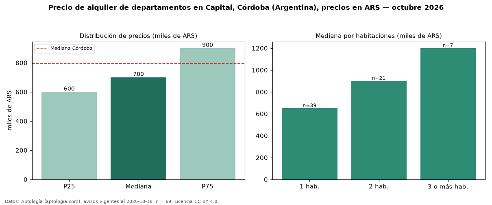

Precio de alquiler de departamentos en Capital, Córdoba (Argentina), precios en ARS — octubre 2026
En Capital, Córdoba (Argentina), la mediana de canon mensual de departamentos es ARS 700.000, según 69 avisos vigentes. Frente a la mediana de Córdoba para departamentos (ARS 795.000), queda 12 % por debajo. Por metro cuadrado, la mediana es ARS 13.823/m² al mes (n = 48 avisos con área), 1 % por debajo de Córdoba (ARS 13.923/m²). El área mediana anunciada es 50 m². El segmento con más oferta es el de 1 habitación (39 avisos, mediana ARS 650.000); pasar de 1 habitación a 3 o más habitaciones cambia la mediana +85 %. La mitad central de los avisos va de ARS 600.000 a ARS 900.000 (razón 1,5), una dispersión moderada. Datos: Aptología (aptologia.com), CC BY 4.0 — https://www.aptologia.com/ar/alquiler/cordoba/capital. Archivos: PDF, CSV con las cifras y gráfica PNG.

| Avisos únicos | 69 |
|---|---|
| Percentil 25 | COP 600.000 |
| Mediana | COP 700.000 |
| Percentil 75 | COP 900.000 |
| Mediana por m² | COP 13.823 |
Fuente: avisos vigentes de portales inmobiliarios recopilados por Aptología, deduplicados (mínimo 30 avisos únicos por celda). Precios pedidos, no cerrados. Fecha: 2026-10-18.